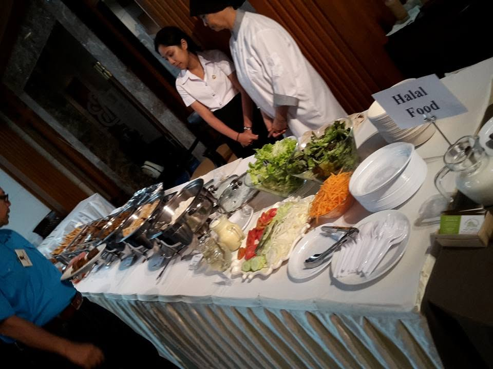

จากครัวเล็ก ๆ ของพี่อี๊ด…สู่ EED HALAL 👩🍳
กว่า 40 ปี จากร้านอาหารในซอยมเหสักข์ ซอย 3 สู่ข้าวกล่องฮาลาลและบริการจัดเลี้ยงที่ทำด้วยใจ…เหมือนทำให้คนในครอบครัวกิน
กว่า 40 ปี จากครัวเล็ก ๆ สู่ข้าวกล่องฮาลาล
ย้อนกลับไปเมื่อกว่า 40 ปีที่แล้ว ในซอยมเหสักข์ ซอย 3 มีร้านอาหารแห่งหนึ่งที่คนในย่านนั้นรู้จักกันดี หลายคนอาจจำชื่อร้านไม่ได้แล้ว แต่ยังจำ “พี่อี๊ด” แม่ครัวฝีมือดี ที่อยู่หลังครัวได้
พี่อี๊ดเป็นคนทำอาหารที่ใส่ใจในทุกรายละเอียด ตั้งแต่การเลือกวัตถุดิบ การเตรียมอาหาร ไปจนถึงรสชาติในแต่ละจาน
สำหรับลูกค้าในสมัยนั้น การได้กินอาหารฝีมือพี่อี๊ด ไม่ได้หมายถึงแค่การได้กินอาหารอร่อย แต่คือความรู้สึกที่ว่า…
“จานนี้พี่อี๊ดทำเอง”

แล้ววันหนึ่ง…ร้านต้องย้าย
เมื่อพื้นที่บริเวณมเหสักข์ถูกเวนคืนเพื่อก่อสร้างทางด่วน ร้านอาหารที่เคยเป็นที่รู้จักในซอยมเหสักข์ ซอย 3 จึงต้องปิดตัวลง
แต่การปิดร้านในวันนั้น ไม่ได้หมายถึงการหยุดทำอาหารของพี่อี๊ด ตรงกันข้าม…
มันกลายเป็นจุดเริ่มต้นของบทใหม่
เมื่อไม่มีหน้าร้าน พี่อี๊ดจึงเริ่มหันมาทำ อาหารกล่องส่งให้บริษัทและร้านค้าต่าง ๆ ในละแวกนั้น จากการทำอาหารให้ลูกค้าที่เดินเข้าร้าน กลายเป็นการทำอาหารจำนวนมาก เพื่อส่งตรงถึงคนทำงานในแต่ละวัน
และด้วยฝีมือและรสชาติที่เป็นเอกลักษณ์ ชื่อของพี่อี๊ดก็ค่อย ๆ ถูกบอกต่อออกไป
จากบริษัทในละแวกนั้น…สู่ร้านอาหารในย่านสีลม
นอกจากทำอาหารกล่องแล้ว พี่อี๊ดยังรับทำ อาหารอินเดีย อาหารไทย และข้าวหมกสูตรพิเศษ ให้กับร้านอาหารต่าง ๆ โดยเฉพาะร้านอาหารในย่านสีลมและพื้นที่ใกล้เคียง
ร้านอาหารที่เคยให้พี่อี๊ดไปทำอาหารไว้เสิร์ฟให้ลูกค้าของตัวเอง

ร้านอาหารมุสลิมที่รับอาหารจากครัวพี่อี๊ด
ร้านอาหารที่สั่งข้าวหมกสูตรพิเศษและอาหารอินเดียจากพี่อี๊ด
และยังมีร้านอาหารอื่น ๆ อีกหลายแห่งทั่วกรุงเทพฯ ที่สั่งอาหารจากพี่อี๊ด โดยเฉพาะ ข้าวหมกสูตรพิเศษและอาหารอินเดีย รวมถึงอาหารไทยที่เป็นสูตรและฝีมือของพี่อี๊ด
จากครัวเล็ก ๆ ของแม่ครัวคนหนึ่ง จึงค่อย ๆ กลายเป็น ครัวเบื้องหลังของร้านอาหารหลายแห่ง
และตลอดช่วงเวลานั้น พี่อี๊ดยังเป็นคนลงมือทำเอง ยังเลือกวัตถุดิบ ยังปรุงอาหาร ยังชิมรส และยังยืนอยู่หน้าเตาเหมือนเดิม
เรื่องราวนั้นกลายเป็น EED HALAL
กว่า 40 ปีผ่านไป พี่อี๊ดยังคงทำอาหารอยู่ในครัว และวันนี้ EED HALAL ยังคงรับทำอาหารส่งให้ร้านอาหาร รวมถึงรับผลิตอาหารในรูปแบบซับคอนแทรกต์ให้กับร้านอาหารต่าง ๆ เช่นเดิม
พร้อมกันนั้น เราได้นำประสบการณ์จากครัวกว่า 40 ปี มาต่อยอดเป็น EED HALAL — ข้าวกล่องฮาลาลและบริการจัดเลี้ยง สำหรับบริษัท การประชุม สัมมนา อบรม งานอีเวนต์ งานเลี้ยง และงานจัดเลี้ยงต่าง ๆ
จากเดิมที่ทำอาหารอยู่เบื้องหลังร้านอาหาร วันนี้เรายังทำงานเบื้องหลังร้านอาหารอยู่ และเพิ่มการดูแลอาหารให้กับบริษัทและลูกค้าโดยตรงด้วย
สิ่งที่เปลี่ยนไปคือรูปแบบการให้บริการ แต่สิ่งที่ไม่เคยเปลี่ยนคือ…
แม่ครัวคนเดิม / ฝีมือเดิม / ความใส่ใจเดิม
สถานที่เปลี่ยนไป รูปแบบเปลี่ยนไป แต่คนทำยังเป็นคนเดิม
เพราะกว่า 40 ปีที่ผ่านมา พี่อี๊ดไม่ได้เพียงแค่ “ทำอาหารขาย” แต่กำลังส่งต่อรสชาติ ประสบการณ์ และความตั้งใจที่อยู่กับตัวเองมาครึ่งชีวิต ให้กับคนรุ่นใหม่ได้รู้จัก
มเหสักข์ ซอย 3
ครัวที่ทำอาหารส่งทั่วกรุงเทพฯ
อาหารที่เคยเสิร์ฟในร้าน
ข้าวหมกและอาหารอินเดียที่ร้านอาหารต่าง ๆ สั่งไปเสิร์ฟ
การทำอาหารส่งให้บริษัทในละแวกนั้น
ข้าวกล่องและบริการจัดเลี้ยงสำหรับองค์กรในวันนี้
และวันนี้… จากครัวของพี่อี๊ด สู่ EED HALAL ข้าวกล่องฮาลาลและบริการจัดเลี้ยง
สถานที่เปลี่ยนไป รูปแบบเปลี่ยนไป
แต่คนทำยังเป็นคนเดิม
👩🍳 พี่อี๊ด — แม่ครัวที่ยังยืนอยู่หน้าเตาเหมือนเดิม
กว่า 40 ปีของรสชาติและประสบการณ์ วันนี้พร้อมส่งต่อจากครัวของเรา ไปถึงโต๊ะอาหารของคุณ